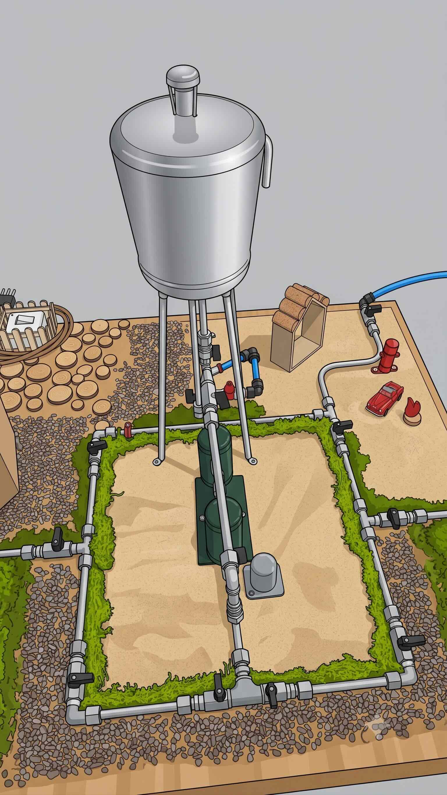
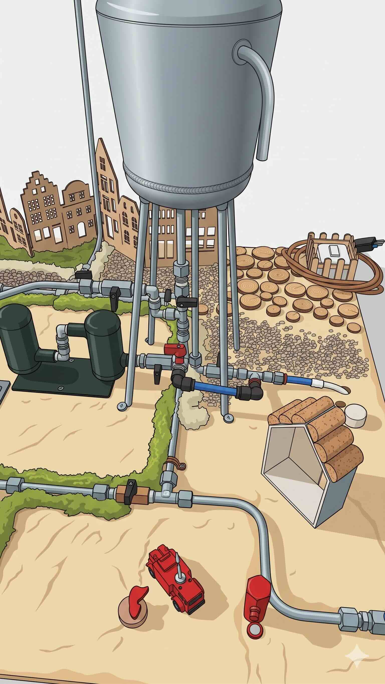

Scuola Sacra Famiglia
reale/virtuale
Dal plastico reale costruito in classe al simulatore virtuale: scopri come l'acqua arriva nelle case passando da cisterna, pompa, filtri e rubinetti.


Scuola Sacra Famiglia · attività didattica sull'acquedotto